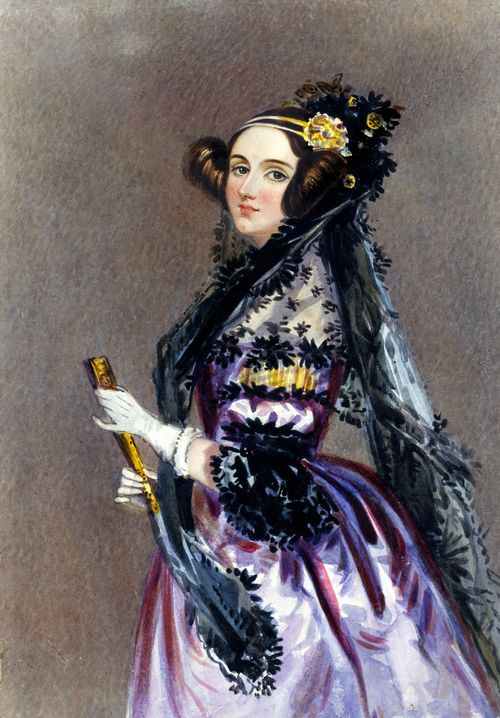

만들어지지도 않은 해석기관을 이용해 베르누이 수를 구하는 알고리즘을 작성했는데[8], 이것이 현재 알려진 최초의 컴퓨터 프로그램이며, 따라서 에이다는 인류 역사상 최초의 프로그래머다. 다만 해석기관은 완성될 기미가 보이지 않기 때문에, 해석기관을 통해서 프로그램이 동작한다는 것을 확인한 사람은 없다. 배비지가 워낙에 날림으로 만들어놔서 예산 문제 + 제작 난점으로 하염없이 시간을 잡아먹고 있다고 한다. 베비지의 사후에도 한참지나서 실제로 완성된 것은 마이너그레이드인 차분기관이다.
루프문, 조건문, 서브루틴 같은 프로그램 제어문이라는 개념도 에이다가 만들었다. C, C++, Java, C#, PHP 등 현재 존재하는 거의 모든 프로그래밍 언어들이 러브레이스가 최초로 구현한 if문의 형태를 그대로 따르고 있다. '값을 구할 때 중요한 건 그 값을 구하는 방정식 중 가장 최소 비용의 방정식을 선택하는 것이다.'라는 발언은 알고리즘 분석이라는 학문의 뿌리가 되었다. 그리고 에이다는 아날로그적이라 간주되는 자연 현상을 수치화함으로써 숫자의 기계적인 조작을 통해 음악을 작곡하거나 그림을 그리는 일, 그리고 그 외에 수많은 일들이 가능할 것으로 예견했지만, 그게 정말로 인간과 같은 지능을 가지기에는 무리가 있음까지 예견했다. 즉 튜링 머신과 폰 노이만 구조의 등장을 1세기 전에 예언한 것이다.